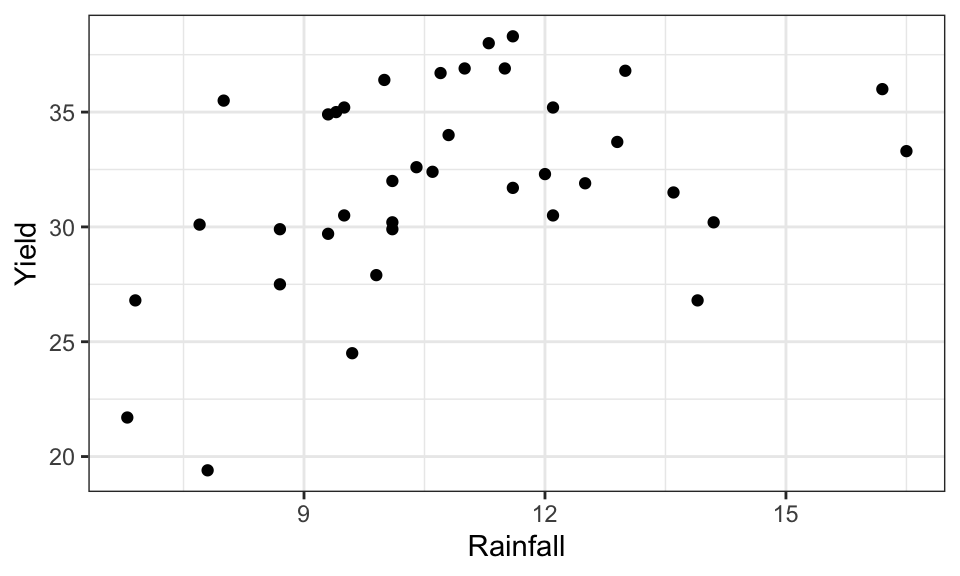
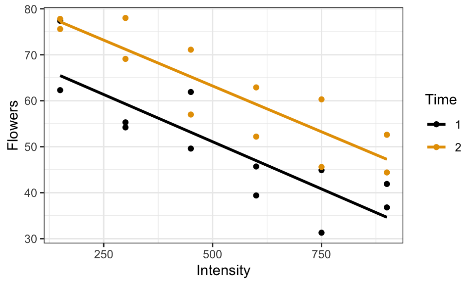
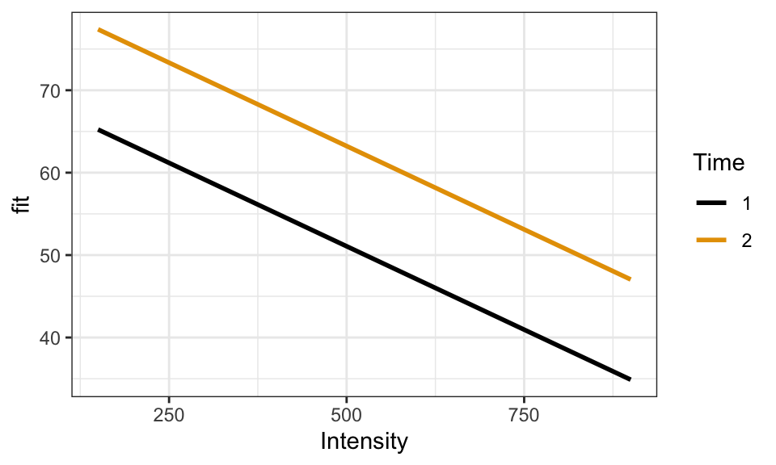
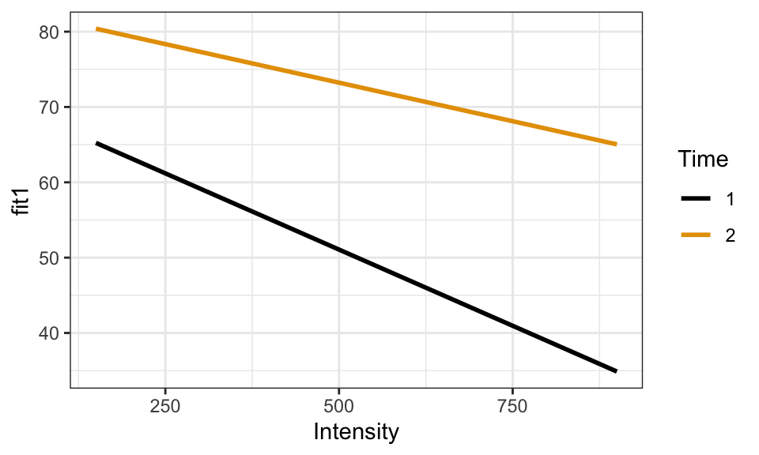

ex0915 <- read_csv("https://dcgerard.github.io/stat_302/data/ex0915.csv")
ggplot(ex0915, aes(x = Rainfall, y = Yield)) +
geom_point()
David Gerard
June 25, 2026

\[Y_i = \beta_0 + \beta_1 X_i + \beta_2 X_i^2 + \epsilon_i\]
To fit a polynomial, create new variables that are powers of existing variables, then include those in the multiple regression model.
Call:
lm(formula = Yield ~ Rainfall + Rainfall2, data = ex0915)
Coefficients:
(Intercept) Rainfall Rainfall2
-5.0147 6.0043 -0.2294 (Intercept) |
Rainfall |
Rainfall2 |
|---|---|---|
| \(\hat\beta_0\) | \(\hat\beta_1\) | \(\hat\beta_2\) |
Estimated model: \[\hat\mu(Y \mid \text{Rainfall}) = -5.0 + 6.0\,\text{Rainfall} - 0.2\,\text{Rainfall}^2\]
I think it works better to wrap a transformation within I() (for “Asis”).
predict() to work with just RainfallLook at how we encode predict():
Researchers studied the effect of timing and light intensity on flower yield:
# A tibble: 6 × 3
Flowers Time Intensity
<dbl> <dbl> <dbl>
1 62.3 1 150
2 77.4 1 150
3 55.3 1 300
4 54.2 1 300
5 49.6 1 450
6 61.9 1 450Model: \(\mu(\text{Flowers} \mid \text{Time},\,\text{Intensity}) = \beta_0 + \beta_1\,\text{Time} + \beta_2\,\text{Intensity}\)
Time can be made into an indicator variable (because it only has two levels).`geom_smooth()` using formula = 'y ~ x'
Let \(Z\) be a categorical variable with levels “Bob”, “Cindy”, “Doug”:
If we have a quantitative response and a categorical explanatory variable, we can apply a one-hot transformation and use multiple linear regression.
\(Y_i = \beta_0 + \beta_1 X_{1i} + \beta_2 X_{2i} + \epsilon_i\)
This is equivalent to one-way ANOVA:
If a variable has only 2 levels, it can be represented by 1 indicator variable. For example, Time has levels Late and Early:
factor, R will automatically apply a one-hot transformation.class():factor, convert it with as.factor():(Intercept) Time2 Intensity
71.30583333 12.15833333 -0.04047143 Model: \(\mu(Y_i \mid \text{Time},\,\text{Intensity}) = \beta_0 + \beta_1 X_{1i} + \beta_2 X_{2i}\), where \(X_{1i} = 1\) if Time is Late and 0 otherwise, and \(X_{2i}\) is light intensity:
(Intercept) |
Time2 |
Intensity |
|---|---|---|
| \(\hat\beta_0\) | \(\hat\beta_1\) | \(\hat\beta_2\) |
When \(\text{Time} = 0\):
\[\mu(Y_i \mid \text{Time} = 0,\,\text{Intensity}) = \beta_0 + \beta_2\,\text{Intensity}\]
When \(\text{Time} = 1\):
\[\mu(Y_i \mid \text{Time} = 1,\,\text{Intensity}) = (\beta_0 + \beta_1) + (\beta_2 + \beta_3)\,\text{Intensity}\]
Time has its own line.No interaction — parallel lines, same slope:

Interaction — non-parallel lines, slopes differ by group:

\(\mu(Y_i \mid \text{Time},\,\text{Intensity}) = \beta_0 + \beta_1\,\text{Time} + \beta_2\,\text{Intensity} + \beta_3\,\text{Time} \times \text{Intensity}\)
(Intercept) Time2 Intensity Time2:Intensity
71.623333333 11.523333333 -0.041076190 0.001209524 (Intercept) |
Time2 |
Intensity |
Time2:Intensity |
|---|---|---|---|
| \(\hat\beta_0\) | \(\hat\beta_1\) | \(\hat\beta_2\) | \(\hat\beta_3\) |
* fits interactions along with all lower-order terms.: just fits interactions.Reconsider the brain weight data:
\(\mu(\text{Brain} \mid \text{Body},\,\text{Litter}) = \beta_0 + \beta_1\,\text{Body} + \beta_2\,\text{Litter} + \beta_3\,\text{Body} \times \text{Litter}\)
Body at a given Litter size?Body at a given Litter size?Interpreting models with interactions is difficult. Include them only when there is a substantive reason to believe the slope changes across levels of the moderating variable.